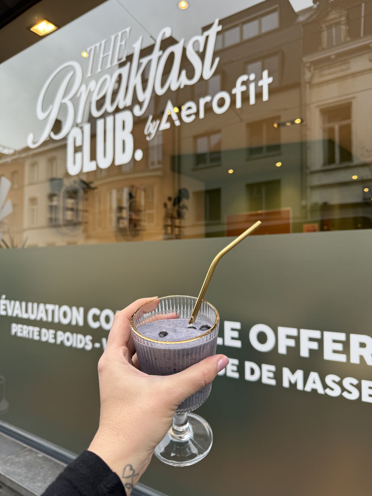
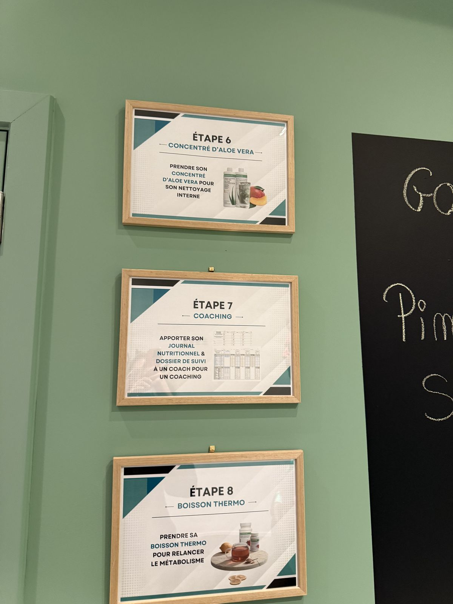

THE
BREAKFAST
CLUB.
Deviens la meilleure version de toi-même
Un centre de remise en forme et de nutrition au cœur d'Uccle, bien plus qu'un simple smoothie du matin. Chaque jour, on t'accompagne avec un petit-déjeuner équilibré, un suivi personnalisé et une communauté qui te pousse à donner le meilleur de toi-même.
Corps sain,
esprit heureux.
Chez The Breakfast Club, on croit qu'un bon petit-déjeuner peut changer ta journée. Et qu'une bonne habitude répétée chaque matin peut changer ta vie. C'est pour ça qu'on a créé un lieu où la nutrition, le coaching et l'esprit de groupe se rencontrent dès les premières heures de la journée.
On ne vend pas de régime miracle. On t'aide à construire des habitudes durables, à comprendre ce que ton corps a besoin, et à prendre plaisir à bien manger. Le résultat ? Plus d'énergie, une meilleure composition corporelle, et une vraie confiance en toi.

Bien plus qu'un
smoothie bar.
Tu connais peut-être les smoothie bars à la mode. Nous, on va beaucoup plus loin. The Breakfast Club est un véritable centre de remise en forme et de nutrition, un lieu hybride où se croisent alimentation équilibrée, coaching personnalisé et énergie collective.
Chaque matin, nos coachs t'accueillent pour un breakfast complet et sur-mesure. On évalue ton état de forme, on adapte tes apports nutritionnels et on suit ta progression au fil des jours. Ce n'est pas un simple repas — c'est un rendez-vous quotidien avec la meilleure version de toi-même.
L'idée est simple : en 10 jours, tu découvres une nouvelle routine. Tu vois les premiers résultats. Et tu comprends que manger bien, ce n'est ni compliqué ni triste — c'est fun, gourmand et tellement efficace.

Le problème
Beaucoup de personnes commencent leur journée sans énergie, sautent le petit-déjeuner ou mangent des choses qui ne nourrissent pas vraiment leur corps. Résultat : fatigue chronique, prise de poids, moral en dents de scie.
- Manque d'énergie dès le réveil
- Difficulté à manger sainement au quotidien
- Motivation instable, objectifs abandonnés
- Sentiment de solitude dans sa démarche
Notre solution
On t'accompagne chaque matin avec des produits de qualité adaptés à tes objectifs, un suivi personnalisé par nos coachs et une communauté bienveillante qui avance avec toi. Pas de régime drastique, pas de frustration — juste des habitudes durables et du plaisir.

Comment ça
fonctionne ?
De ta première visite à tes résultats, voici les étapes de ton parcours au Breakfast Club.
Première visite
Tu viens découvrir le club, rencontrer les coachs et goûter ton premier breakfast. On fait un bilan de ta composition corporelle et on discute de tes objectifs.
Ton programme
On te propose un accompagnement personnalisé sur 10 jours. Chaque matin, tu viens prendre ton thé détox, ton smoothie protéiné et tes conseils nutrition adaptés.
Suivi quotidien
Ton coach suit ta progression jour après jour. On ajuste tes apports, on répond à tes questions et on s'assure que tu restes motivé. Tu n'es jamais seul dans ta démarche.
Résultats visibles
En 10 jours, tu constates les premiers changements : plus d'énergie, meilleur sommeil, perte de poids, meilleure composition corporelle. Et surtout, une routine que tu as envie de garder.
Tout ce qu'il te faut
chaque matin.
Nos breakfasts sont conçus pour t'apporter tout ce dont ton corps a besoin pour bien démarrer la journée. Chaque élément a un rôle précis dans ton programme de remise en forme.
Thé détox
Commence ta matinée avec une infusion purifiante à base de plantes qui réveille ton métabolisme, aide à éliminer les toxines et prépare ton corps à absorber les nutriments de ton breakfast. C'est la première étape essentielle de chaque matin au club.
Smoothies protéinés
Des shakes gourmands, équilibrés et riches en protéines de qualité, vitamines et fibres. Chaque smoothie est adapté à tes objectifs — perte de poids, prise de masse musculaire ou simplement maintien d'une alimentation saine. Plusieurs saveurs au choix pour ne jamais se lasser.
Conseils nutrition
Nos coachs sont formés pour te donner des conseils nutritionnels personnalisés, adaptés à ton mode de vie, tes contraintes et tes goûts. On t'apprend à lire les signaux de ton corps et à faire des choix alimentaires intelligents, même en dehors du club.
Suivi quotidien
Chaque matin, on fait le point avec toi. Comment tu te sens, comment tu as dormi, ce que tu as mangé la veille. On ajuste tes apports en fonction de ta progression et on te donne les clés pour optimiser tes résultats jour après jour.
Motivation & communauté
Tu n'es jamais seul dans ta démarche. Au Breakfast Club, tu rejoins une communauté de personnes qui partagent les mêmes objectifs. L'énergie du groupe, les encouragements des coachs et l'ambiance chaleureuse du lieu font toute la différence.
Bilan de composition corporelle
À ton arrivée et régulièrement pendant ton parcours, on réalise un bilan complet de ta composition corporelle. Masse grasse, masse musculaire, hydratation — des données concrètes pour mesurer tes progrès et ajuster ton programme.


Tu n'es jamais seul.
L'un des piliers du Breakfast Club, c'est la communauté. Quand tu passes notre porte le matin, tu ne viens pas juste boire un smoothie — tu rejoins un groupe de personnes qui, comme toi, ont décidé de prendre soin d'elles.
Les habitués se connaissent, s'encouragent, partagent leurs avancées. Les nouveaux sont accueillis à bras ouverts. C'est cette dynamique collective qui fait que les résultats sont là : quand on est entouré, on lâche moins facilement.
Nos coachs ne sont pas là juste pour servir des smoothies. Ils connaissent chaque membre par son prénom, suivent sa progression et adaptent leurs conseils au quotidien. C'est un vrai suivi humain, dans un cadre convivial et bienveillant.
Real people,
real results.
Les transformations de nos membres parlent d'elles-mêmes. La régularité et l'accompagnement font toute la différence. En quelques semaines de routine au club, les changements sont visibles — et mesurables.


Ces résultats ne sont pas des exceptions — ils sont la norme pour ceux qui s'engagent dans le programme. La clé, c'est la régularité : venir chaque matin, suivre les conseils de ton coach, et laisser les bonnes habitudes faire leur travail. Pas de régime extrême, pas de privation — juste une alimentation adaptée et un suivi sérieux.
Ce qu'ils en
disent.
Les retours de nos membres sont notre plus grande fierté. Voici ce que vivent au quotidien ceux qui ont rejoint le club.
Après 50 visites, les résultats sont incroyables. J'ai perdu du poids, ma composition corporelle a complètement changé et j'ai tellement plus d'énergie au quotidien. Le matin, j'ai hâte de me lever pour aller au club. C'est devenu bien plus qu'une habitude — c'est un mode de vie.
La communauté, c'est ce qui me fait revenir chaque matin. Tu n'es jamais seul, et les coachs se soucient vraiment de ta progression. Ils savent exactement où j'en suis, ce qu'il faut ajuster. J'ai essayé beaucoup de choses avant, mais rien n'a eu cet impact.
J'ai remplacé mon café et mes tartines du matin par un thé détox et un smoothie protéiné, et je ne me suis jamais senti aussi bien. Mon énergie est stable toute la matinée, je ne grignote plus et mes proches ont remarqué le changement.
Ton programme
sur 10 jours.
Une solution simple et accessible pour tester le concept, progresser et voir de vrais résultats. Pas d'engagement longue durée — juste 10 matins pour changer tes habitudes.
La carte comprend tout : thé détox, smoothie protéiné, coaching quotidien, bilan de composition corporelle et accès à notre communauté. Rien de caché, tout est inclus.
Carte 10 Breakfasts
- 10 sessions petit-déjeuner complet
- Thé détox + smoothie protéiné
- Coaching & suivi quotidien personnalisé
- Bilan de composition corporelle
- Accès à la communauté du club
- Conseils nutrition en dehors du club
Questions
fréquentes.
C'est quoi exactement The Breakfast Club ?
C'est un centre de remise en forme et de nutrition. Chaque matin de 7h à 11h, on t'accueille pour un petit-déjeuner équilibré (thé détox + smoothie protéiné), accompagné d'un suivi nutritionnel personnalisé et d'une communauté motivante.
Je dois venir tous les jours ?
Idéalement, oui ! La régularité est la clé des résultats. Mais la carte de 10 sessions te permet de venir à ton rythme. Plus tu es régulier, plus les effets sont rapides et durables.
Est-ce que c'est adapté à mon régime / mes allergies ?
Absolument. Nos coachs adaptent les smoothies et les conseils en fonction de tes besoins, intolérances et préférences. Chaque programme est personnalisé.
Combien de temps avant de voir des résultats ?
La plupart de nos membres constatent des changements dès les 5 premiers jours : plus d'énergie, meilleur sommeil, moins de fringales. Les résultats visibles sur la composition corporelle arrivent généralement entre 2 et 4 semaines.
C'est ouvert à tout le monde ?
Oui, homme ou femme, 18 ou 65 ans, sportif ou débutant total. Notre accompagnement s'adapte à chaque profil. La seule condition : avoir envie de prendre soin de soi.
Comment réserver mon créneau ?
Contacte-nous via WhatsApp, Instagram ou par téléphone. On t'attribue un créneau d'1 heure le matin (max 10 personnes par créneau) pour un accompagnement de qualité.
Réserve ton créneau.
Chaque matin, on accueille jusqu'à 10 personnes par créneau d'1 heure avec un coach dédié. Ce format intimiste nous permet de t'offrir un suivi de qualité et une attention personnalisée. Réserve ta place pour être sûr d'avoir ton créneau.
Viens nous voir.
Ta première visite est l'occasion de découvrir le lieu, de rencontrer les coachs et de goûter à notre breakfast. Aucun engagement — viens simplement voir si l'ambiance te correspond.
Adresse
715 Chaussée d'Alsemberg
1180 Uccle, Belgique
Horaires
Tous les matins
7h00 – 11h00